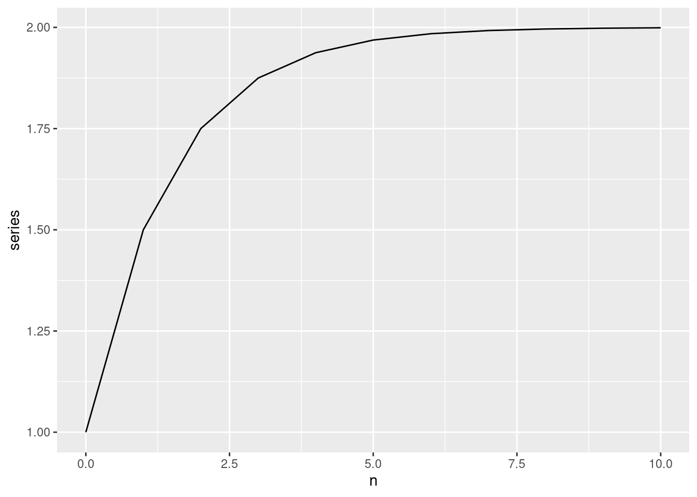

library(tidyverse)3 Linear Difference Equations
3.1 First Order Difference Equations
Difference equations describe the dynamic behavior of a sequence by relating the current value of a variable to its previous values.
Let us start with a simple difference equation defined by:
\[ y_{t} = \phi y_{t - 1} + e_t \]
For example, imagine that it describes the value of your bank deposit. Suppose you receive an interest of 2 percent annually. In that case, the value of your account this year (\(y_t\)) is equal to the value of the account the previous year plus the interest earned (\(\phi = 1 + 0.02\)). You can think about \(e_t\) as withdrawals or additional deposits to your account.
We want to achieve two goals. The first goal is to solve this equation by expressing \(y_t\) as a function of some initial value \(y_0\), the time index \(t\), the parameter \(\phi\) and the sequence of \(e_t\).
It helps if we write the equation for a couple of periods.
\[ \begin{align} 1 & \quad y_1 = \phi y_{0} + e_{1} \\ 2 & \quad y_2 = \phi y_{1} + e_{2} \\ 2 & \quad y_3 = \phi y_{2} + e_{3} \\ & \vdots \\ t & \quad y_{t} = \phi y_{t - 1} + e_{t} \\ t + 1 & \quad y_{t + 1} = \phi y_{t} + e_{t + 1}\\ t + 2 & \quad y_{t + 2} = \phi y_{t + 1} + e_{t + 2} \end{align} \]
Try substituting the first equation into the second, then the second into the third equation.
Click here to see the solution
\[ y_3 = \phi^3 y_0 + \phi^2 e_{1} + \phi e_{2} + \phi^0e_{3} \]
You can generalize this for \(y_t\):
\[ y_{t + j} = \phi^{j + 1} y_{t - 1} + \phi^{j}e_{t} + \phi^{j - 1} e_{t + 1} + \ldots \phi^1 e_{t + j - 1} + \phi^0 e_{t + j} \] We can write this more compactly as:
\[ y_{t + j} = \phi^{j + 1} y_{t - 1} + \sum_{k = 0}^{j} \phi^{k} e_{t + j - k} \]
You should check that the above formula is correct. Let’s write it down for \(j = 2\).
Click here to see the result
\[ \begin{align} y_{t + 2} = \phi^{2 + 1}y_{t - 1} & + \phi^0 e_{t + 2 - 0} \\ & + \phi^{1} e_{t + 2 - 1} \\ & + \phi^{2} e_{t + 2 - 2} \\ \end{align} \]
Now that we know how to solve the equation, we can analyze the behavior of the dynamic system that it describes. It turns out that this behavior is determined by the parameter \(\phi\).
Let’s investigate the effect of a unit change in \(e_t\) on \(y_{t + j}\), assuming that all other values of \(e\) remain unchanged.
\[ \frac{\partial y_{t + j}}{\partial e_{t}} = \phi^j \] Note that the effect on \(y_{t}\) only depends on the distance in time between the shock \(e_t\) and the response \(y_{t + j}\), not on the time index itself. This is a property of linear difference equations.
Now, obviously, a unit shock in time \(t\) will have a different effect on \(y_{t + j}\) depending on the value of \(\phi\).
Another effect that we would like to analyze is the effect of a permanent unit change in the autonomous process \(e_t\). What will happen to \(y_t\) if all \(e_t\) increase by one unit?
Click here to see the result
\[ y_{t + j} = \phi^{j + 1}y_{t - 1} + \sum_{k = 0}^{j}\phi^k e_{t + j - k} \]
\[ \begin{align} y^{*}_{t + j} & = \phi^{j + 1}y_{t - 1} & + \sum_{k = 0}^{j}\phi^k (e_{t + j - k} + 1) \\ & = \phi^{j + 1}y_{t - 1} & + \sum_{k = 0}^{j}\phi^k e_{t + j - k} + \sum_{k = 0}^{j}\phi^k \end{align} \]
From this, it should be easy to see that
\[ y^{*}_{t + j} - y_{t + j} = \sum_{k = 0}^{j}\phi^k. \]
The effect of a permanent unit change in \(e_t\) is thus a power series in the parameter \(\phi\). At this point, it is helpful to remember a theorem from school about the limit of this series.
Theorem 3.1 (Convergence of a Geometric Series) \[ S_{n} = 1 + \phi + \phi^2 + \phi^3 + \ldots + \phi^n \]
Assuming that \(\phi \neq 1\), this series can be expressed more compactly as
\[ S_{n} = \frac{1 - \phi^{n + 1}}{1 - \phi} \]
To see this, compute the difference between \(S_n\) and \(\phi S_n\) and rearrange.
If \(|\phi| < 1 \iff -1 < \phi < 1\) the series has a limit for \(n \to \infty\):
\[ \lim_{n \to \infty} S_{n} = \frac{1}{1 - \phi} \]
Exercise 3.1 (Geometric Series) To see how this series behaves, give it a try in R.
phi <- 0.5
# This will give you a vector of the first 11 elements
dt_gseries <- tibble(
n = 0:10,
el = phi^n,
# The geometric series is simply the cumulative sum of these elements
series = cumsum(el)
)
dt_gseries %>%
ggplot(aes(x = n, y = series)) +
geom_line()
Let us check
set.seed(321)
# Set the parameter phi
phi <- 0.5
# Set the initial value (y_{t - 1}) in the above notation
y_init <- 1
# Set the number of periods j
B <- 1
dt <- tibble(
j = 0:B,
# Generate random values for e
e = rnorm(n = B + 1),
# Add one to the first row of e
e_trans = e + c(1, rep(0, B)),
# Add one to all values of e
e_perm = e + 1,
# Compute the powers of phi used to weight e/e_trans/e_perm
phi_powers = phi^(B - j)
)
dt %>%
summarise(
# The following simply implements the formula for y
y = phi^(B + 1) * y_init + sum(e * phi_powers),
y_trans = phi^(B + 1) * y_init + sum(e_trans * phi_powers),
y_perm = phi^(B + 1) * y_init + sum(e_perm * phi_powers),
y_diff_trans = y - y_trans,
y_diff_perm = y - y_perm
) %>%
knitr::kable(digits = 2)| y | y_trans | y_perm | y_diff_trans | y_diff_perm |
|---|---|---|---|---|
| 0.39 | 0.89 | 1.89 | -0.5 | -1.5 |
Exercise 3.2 Given a first order difference equation with \(\phi = 0.8\), find the value of the process in \(t = 3\), knowing that it started with \(y_0 = 5\). Assume that \(e_t = 0\) for all \(t\).
Solution.
# Type your code here3.2 First-Order Vector Difference Equations
In this course, we will focus exclusively on univariate time series analysis. Still, for the sake of motivating the study of higher-order linear difference equations, it is convenient to introduce vector linear difference equations. Let’s start with two variables, \(x_t\) and \(y_t\).
\[ \begin{align} x_{t} & = \phi_{x,1}x_{t - 1} + \phi_{y, 1}y_{t - 1} + e_{x,t} \\ y_{t} & = \phi_{x_2}x_{t - 1} + \phi_{y, 2}y_{t - 1} + e_{y,t} \end{align} \]
It is convenient to write this equation in matrix form.
\[ \underbrace{\begin{pmatrix} x_{t} \\ y_{t} \end{pmatrix}}_{\mathbf{z}_t} = \underbrace{\begin{pmatrix} \phi_{x, 1} & \phi_{y, 1} \\ \phi_{x, 2} & \phi_{y, 2} \end{pmatrix} }_{\mathbf{A}} \underbrace{\begin{pmatrix} x_{t - 1} \\ y_{t - 1} \end{pmatrix}}_{\mathbf{z}_{t - 1}} + \underbrace{\begin{pmatrix} e_{x,t} \\ e_{y,t} \end{pmatrix}}_{\mathbf{e}_t} \]
\[ \mathbf{z}_{t} = \mathbf{A} \mathbf{z}_{t - 1} + \mathbf{e}_{t} \]
If \(\mathbf{A}\) were a diagonal matrix, then we already know the solution because we can solve each equation separately.
\[ \underbrace{\begin{pmatrix} x_{t} \\ y_{t} \end{pmatrix}}_{\mathbf{z}_t} = \underbrace{\begin{pmatrix} \phi_{x,1} & 0 \\ 0 & \phi_{y, 2} \end{pmatrix} }_{\mathbf{A}} \underbrace{\begin{pmatrix} x_{t - 1} \\ y_{t - 1} \end{pmatrix}}_{\mathbf{z}_{t - 1}} + \underbrace{\begin{pmatrix} e_{x,t} \\ e_{y,t} \end{pmatrix}}_{\mathbf{e}_t} \]
However, \(\mathbf{A}\) depends on the subject matter at hand, and we need to be able to handle the general case (not diagonal). Linear algebra provides an elegant solution to our problem. The eigendecomposition of the matrix \(\mathbf{A}\) allows us to transform the system of equations into a form where we can apply the simple solution. After solving the equations, we can back-transform to the original variables.
\[ \mathbf{A} = \mathbf{V} \begin{pmatrix} \lambda_1 & 0 \\ 0 & \lambda_2 \end{pmatrix} \mathbf{V}^{-1} \]
Using this decomposition, we can transform the complicated problem to a simple one with only diagonal entries in the matrix before \(\mathbf{z}_{t - 1}\).
\[ \begin{align} \mathbf{z}_{t} & = \mathbf{A} \mathbf{z}_{t - 1} + \mathbf{e}_{t} \\ \mathbf{z}_{t} & = \mathbf{V} \mathbf{\Lambda}\mathbf{V^{-1}} \mathbf{z}_{t - 1} + \mathbf{e}_{t} \\ \mathbf{V}^{-1} \mathbf{z}_{t} & = \mathbf{V}^{-1} \mathbf{V}\mathbf{\Lambda}\mathbf{V}^{-1} \mathbf{z}_{t - 1} + \mathbf{V}^{-1}\mathbf{e}_{t} \\ \mathbf{V}^{-1} \mathbf{z}_{t} & = \mathbf{\Lambda}\mathbf{V}^{-1} \mathbf{z}_{t - 1} + \mathbf{V}^{-1}\mathbf{e}_{t} \\ \tilde{\mathbf{z}}_{t} & = \mathbf{\Lambda} \tilde{\mathbf{z}}_{t - 1} + \tilde{\mathbf{e}_{t}} \end{align} \]
Lets see an example.
B <- matrix(c(1, 9, 4, 1), ncol = 2)
B [,1] [,2]
[1,] 1 4
[2,] 9 1ed <- eigen(B)
edeigen() decomposition
$values
[1] 7 -5
$vectors
[,1] [,2]
[1,] 0.5547002 -0.5547002
[2,] 0.8320503 0.8320503solve(ed$vectors) [,1] [,2]
[1,] 0.9013878 0.6009252
[2,] -0.9013878 0.6009252ed$vectors %*% diag(ed$values) %*% solve(ed$vectors) [,1] [,2]
[1,] 1 4
[2,] 9 1In this example the diagonal matrix \(\mathbf{\Lambda}\) is equal to
\[ \mathbf{\Lambda} = \begin{pmatrix} 7 & 0 \\ 0 & -5 \end{pmatrix} \] The inverse of the eigenvectors matrix is
\[ \mathbf{V}^{-1} = \begin{pmatrix} 0.9 & 0.6 \\ -0.9 & 0.6 \end{pmatrix} \]
The transformed vectors \(\tilde{\mathbf{z}_{t}}\) will look like:
\[ \tilde{\mathbf{z}_{t}} = \mathbf{V}^{-1}\mathbf{z}_t = \begin{pmatrix} 0.9 & 0.6 \\ -0.9 & 0.6 \end{pmatrix} \begin{pmatrix} x_{t} \\ y_{t} \end{pmatrix} = \begin{pmatrix} 0.9x_t + 0.6y_t \\ -0.9x_t + 0.6 y_t \end{pmatrix} \]
The whole system looks like:
\[ \begin{pmatrix} 0.9x_t + 0.6y_t \\ -0.9x_t + 0.6 y_t \end{pmatrix} = \begin{pmatrix} 7 & 0 \\ 0 & -5 \end{pmatrix} \begin{pmatrix} 0.9x_{t - 1} + 0.6y_{t - 1} \\ -0.9x_{t - 1} + 0.6 y_{t - 1} \end{pmatrix} + \begin{pmatrix} 0.9e_{x,t} + 0.6e_{y,t} \\ -0.9e_{x,t} + 0.6 e_{y,t} \end{pmatrix} \]
Now, we can solve the difference equation in the simple case. Once we have found the solutions, we can transform it back to the original variables \(x_t\) and \(y_t\).
For the purposes of this course, however, our focus lies on the behavior of the system: Does it converge to a stable path?
The answer is in the matrix \(\mathbf{A}\). When we start doing the the recursive substitution that we did in the scalar case, the transformed equations will look like this:
\[ \begin{align} \tilde{\mathbf{z}}_{t} & = \mathbf{\Lambda} \tilde{\mathbf{z}}_{t - 1} + \tilde{\mathbf{e}_{t}} \\ \tilde{\mathbf{z}}_{t} & = \mathbf{\Lambda} (\mathbf{\Lambda} \tilde{\mathbf{z}}_{t - 1} + \tilde{\mathbf{e}_{t}}) + \tilde{\mathbf{e}_{t}} \\ \implies \tilde{\mathbf{z}}_{t} & = \mathbf{\Lambda}^2 \tilde{\mathbf{z}}_{t - 1} +\mathbf{\Lambda} \tilde{\mathbf{e}_{t}} + \tilde{\mathbf{e}_{t}} \end{align} \]
You can continue the substitution just like we did in Exercise 3.2. At this point, you should realize that the system’s behavior depends on the matrix \(\mathbf{\Lambda}\). If the elements of \(\mathbf{\Lambda|\) are less than one in absolute value, the system will return to equilibrium after a shock. Otherwise, it will show explosive behavior. This leads us to the following problem: How do we find the values of the diagonal matrix? We will make use of a result from linear algebra.
Theorem 3.2 (Eigenvalues) The eigenvalues of a square matrix \(\mathbf{A}\) are the solutions of the following equation.
\[ \det(\mathbf{A} - \lambda\mathbf{I}) = 0 \]
3.3 Second-Order Linear Difference Equations
In a second-order difference equation, the current value \(y_t\) depends (directly) on the values up to two periods before it: \(y_{t - 1}\) and \(y_{t - 2}\).
\[ y_{t} = \phi_{1}y_{t - 1} + \phi_{2}y_{t - 2} + e_{t} \]
As in the first-order case, we want to investigate the stability property of this process: How does \(y_{t + j}\) change in response to variations in the shocks (\(e_t\)). It helps to express this equation as a first-order VAR process.
\[ \begin{align} x_{t} & = \phi_{1}x_{t - 1} + \phi_{2}x_{t - 2} + e_{t} \\ x_{t - 1} & = x_{t - 1} \end{align} \]
The matrix for the VAR process is simple in this case.
\[ \begin{pmatrix} x_t \\ x_{t - 1} \end{pmatrix} = \begin{pmatrix} \phi_1 & \phi_2 \\ 1 & 0 \end{pmatrix} \begin{pmatrix} x_{t - 1} \\ x_{t - 2} \end{pmatrix} + \begin{pmatrix} e_{t} \\ 0 \end{pmatrix} \] We can use Theorem 3.2 to find the eigenvalues of the matrix:
\[ \det(\mathbf{A} - \lambda\mathbf{I}) = 0 \] In our case of a second-order difference equation, it is simply
\[ \det\begin{pmatrix} \phi_1 - \lambda & \phi_2 \\ 1 & 0 - \lambda \end{pmatrix} = 0. \]
\[ (\phi_1 - \lambda)(-\lambda) - \phi_2 \cdot 1 = 0 \\ \lambda^2 - \lambda \phi_1 - \phi_2 = 0 \]
The left-hand side of this equation is called the characteristic polynomial of the difference equation. The whole equation is called the characteristic equation.
Most of the time, we derive this equation using the lag operator:
\[ x_{t} = \phi_1 x_{t - 1} + \phi_2 x_{t - 2} + e_t \\ x_{t} = \phi_1 L x_{t} + \phi_2 L^2 x_{t} + e_{t} \\ (1 - \phi_1 L - \phi_2 L^2) x_{t} = e_{t} \]
Theorem 3.3 (Solutions of a Quadratic Equation) The solutions of a quadratic equation
\[ a \lambda^2 + b \lambda + c = 0 \]
are given by:
\[ \lambda_{1,2} = \frac{-b \pm\sqrt{b^2 - 4ac}}{2a} \]
\[ (\lambda - \lambda_1)(\lambda - \lambda_2) = 0 \]
In the more general case, you can rely on the Fundamental Theorem of Algebra.
Theorem 3.4 (The Fundamental Theorem of Algebra) Any n-th order polynomial with complex coefficients has exactly n (possibly repeating) complex roots.
\[ a_0 + a_1 \lambda + a_2 \lambda^2 + \ldots a_n\lambda^n = 0 \]
\[ (\lambda - \lambda_1)(\lambda - \lambda_2)\cdot \ldots\cdot(\lambda - \lambda_n) = 0 \]
Exercise 3.3 (Characteristic roots) Find the characteristic roots of the following difference equation:
\[
y_t = y_{t - 1} + 0.2 y_{t - 2} + e_t
\] Use Theorem 3.3 to compute the roots by hand. First, find the characteristic equation using matrix notation, then use the lag polynomial to derive it. Confirm your solution using the polyroot function in R. Is the equation stable?
Solution.
# Type your code here